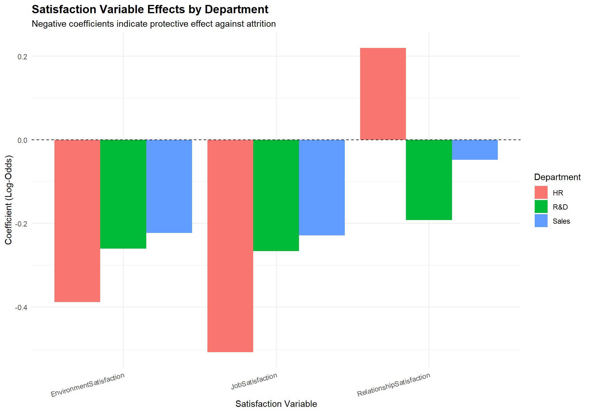

Dataset Overview:- Total Employees: 1470 - Overall Attrition Rate: 16.1 %- Employees Who Left: 237 - OverTime Attrition Rate: 30.5 %STAT 515 Final Project
This comprehensive statistical analysis investigates the factors contributing to employee attrition using the IBM HR Analytics Employee Attrition & Performance dataset (n=1470). The study addresses three primary research questions using decision trees, random forests, logistic regression with interaction terms, LASSO variable selection, and stratified departmental analysis.
Key Findings (computed from models below):
Work-Life Imbalance: OverTime is the strongest predictor of attrition. Decision tree analysis identifies high-risk profiles combining overtime work with low tenure.
Career Stagnation & Compensation: Years since last promotion increases attrition risk, and LASSO selects the strongest predictors across work-life, pay, and tenure.
Department-Stratified Satisfaction: Satisfaction variables show different predictive patterns across departments.
Dataset Overview:- Total Employees: 1470 - Overall Attrition Rate: 16.1 %- Employees Who Left: 237 - OverTime Attrition Rate: 30.5 %Employee turnover represents one of the most significant challenges facing modern organizations. Industry estimates suggest replacing an employee can cost a substantial fraction of their annual salary when accounting for recruiting, training, and lost productivity. Understanding the factors that drive employees to leave enables targeted retention strategies before valuable talent departs.
This analysis leverages the IBM HR Analytics dataset (realistic, simulated dataset commonly used for HR analytics). The dataset contains 1,470 employee records with 39 attributes spanning demographics, job characteristics, satisfaction metrics, and work-life balance indicators.
An explanation of why these research questions were chosen would be nice
Work-Life Imbalance & Attrition Risk Profiling: How do work-life factors (OverTime, DistanceFromHome, WorkLifeBalance, YearsAtCompany) interact to predict attrition, and can we identify distinct “high-risk” profiles?
Career Stagnation & Compensation Effects: At what thresholds do career stagnation indicators (YearsSinceLastPromotion, YearsInCurrentRole) combined with compensation (MonthlyIncome, PercentSalaryHike) become critical predictors of attrition?
Department-Stratified Satisfaction Analysis: Does the predictive power of satisfaction variables (JobSatisfaction, EnvironmentSatisfaction, RelationshipSatisfaction) differ across departments, and which matters most within each?
Dataset Dimensions: 1470 employees, 41 variables| Variable | Description | Research Q |
|---|---|---|
| Attrition | Employee left the company (Yes/No) - Response Variable | All |
| OverTime | Whether employee works overtime (Yes/No) | Q1 |
| DistanceFromHome | Distance from home to workplace (miles) | Q1 |
| WorkLifeBalance | Work-life balance rating (1-4, higher = better) | Q1 |
| YearsAtCompany | Total years at current company | Q1 |
| YearsSinceLastPromotion | Years since last promotion | Q2 |
| YearsInCurrentRole | Years in current role | Q2 |
| MonthlyIncome | Monthly salary | Q2 |
| PercentSalaryHike | Percent salary increase | Q2 |
| JobLevel | Job level within company hierarchy (1-5) | Q2 |
| JobSatisfaction | Job satisfaction rating (1-4) | Q3 |
| EnvironmentSatisfaction | Environment satisfaction rating (1-4) | Q3 |
| RelationshipSatisfaction | Relationship satisfaction rating (1-4) | Q3 |
| Department | Department | Q3 |

Class Weights for Imbalanced Learning:- Weight for Class 0 (No Attrition): 0.5961 - Weight for Class 1 (Attrition): 3.1013 The dataset exhibits a significant class imbalance in employee attrition, with 83.9% of employees (1,233) having “No” as their attrition value and only 16.1% (237) having “Yes.” This imbalance can challenge predictive modeling, as algorithms may be biased toward the majority class. To mitigate this, class weights were calculated inversely proportional to class frequencies, assigning a weight of 0.5961 to the majority class (No attrition) and 3.1013 to the minority class (Yes attrition). These weights can be applied during model training to give greater importance to underrepresented cases, improving the model’s ability to correctly identify employees at risk of leaving.

The graphical analysis suggests that employee attrition varies substantially across several workplace and demographic factors. Employees who work overtime show a markedly higher attrition rate (30.5%) compared to those who do not work overtime (10.4%), indicating overtime may be a strong contributor to turnover. Attrition also differs by department, with Sales experiencing the highest rate (20.6%), followed by HR (19%), while Research & Development has the lowest attrition (13.8%). Marital status appears to be associated with attrition as well, as single employees have a notably higher turnover rate (25.5%) than married (12.5%) or divorced employees (10.1%). Finally, business travel frequency shows a clear pattern: employees who travel frequently have the highest attrition rate (24.9%), followed by those who travel rarely (15%), while non-traveling employees have the lowest attrition (8%). Overall, these graphs indicate that workload demands, job role characteristics, and personal circumstances may play important roles in employee turnover.
| Variable | χ² | df | p-value | Cramer's V | Sig. |
|---|---|---|---|---|---|
| OverTime | 87.56 | 1 | 0.0000000 | 0.2441 | *** |
| Department | 10.80 | 2 | 0.0045256 | 0.0857 | ** |
| JobRole | 86.19 | 8 | 0.0000000 | 0.2421 | *** |
| MaritalStatus | 46.16 | 2 | 0.0000000 | 0.1772 | *** |
| BusinessTravel | 24.18 | 2 | 0.0000056 | 0.1283 | *** |
| Gender | 1.12 | 1 | 0.2905724 | 0.0276 |
OverTime and JobRole show the strongest relationships with attrition, both highly significant (p < 0.001) and exhibiting moderate effect sizes, suggesting that employees’ overtime status and job roles are meaningfully related to the likelihood of leaving the company. MaritalStatus and BusinessTravel are also highly significant, though with smaller effect sizes, indicating weaker but still relevant associations with attrition. Department shows a statistically significant relationship with attrition as well, but the small effect size suggests a limited practical impact. In contrast, Gender is not significantly associated with attrition, and its negligible effect size indicates that it is unlikely to influence whether an employee leaves the organization.

When examining key numerical values in our analysis, we observe noticeable differences in attrition rates across employee categories. Attrition was more common among younger employees, those with lower monthly incomes, and employees with fewer years at the company. Additionally, employees who worked farther from home exhibited higher rates of attrition.
| Variable | Mean (No) | Mean (Yes) | Difference | p-value | Sig. | |
|---|---|---|---|---|---|---|
| mean in group No | Age | 37.56 | 33.61 | -3.95 | 0.0000000 | *** |
| mean in group No1 | MonthlyIncome | 6832.74 | 4787.09 | -2045.65 | 0.0000000 | *** |
| mean in group No2 | DistanceFromHome | 8.92 | 10.63 | 1.72 | 0.0041365 | ** |
| mean in group No3 | YearsAtCompany | 7.37 | 5.13 | -2.24 | 0.0000002 | *** |
| mean in group No4 | YearsInCurrentRole | 4.48 | 2.90 | -1.58 | 0.0000000 | *** |
| mean in group No5 | YearsSinceLastPromotion | 2.23 | 1.95 | -0.29 | 0.1986513 | |
| mean in group No6 | TotalWorkingYears | 11.86 | 8.24 | -3.62 | 0.0000000 | *** |
| mean in group No7 | JobSatisfaction | 2.78 | 2.47 | -0.31 | 0.0001052 | *** |
| mean in group No8 | EnvironmentSatisfaction | 2.77 | 2.46 | -0.31 | 0.0002092 | *** |
| mean in group No9 | WorkLifeBalance | 2.78 | 2.66 | -0.12 | 0.0304657 | * |
How do work-life factors (OverTime, DistanceFromHome, WorkLifeBalance, YearsAtCompany) interact to predict employee attrition, and can we identify distinct “high-risk” employee profiles using these variables?


Confusion Matrix and Statistics
Reference
Prediction 0 1
0 249 21
1 119 52
Accuracy : 0.6825
95% CI : (0.6368, 0.7258)
No Information Rate : 0.8345
P-Value [Acc > NIR] : 1
Kappa : 0.2529
Mcnemar's Test P-Value : 2.444e-16
Sensitivity : 0.6766
Specificity : 0.7123
Pos Pred Value : 0.9222
Neg Pred Value : 0.3041
Prevalence : 0.8345
Detection Rate : 0.5646
Detection Prevalence : 0.6122
Balanced Accuracy : 0.6945
'Positive' Class : 0
Decision Tree AUC-ROC: 0.7084
Call:
glm(formula = Attrition_Binary ~ OverTime_Binary + DistanceFromHome +
WorkLifeBalance + YearsAtCompany + OT_x_WLB + OT_x_Distance +
OT_x_YearsAtCompany, family = binomial(link = "logit"), data = hr_q1)
Coefficients:
Estimate Std. Error z value Pr(>|z|)
(Intercept) -1.14314 0.41339 -2.765 0.00569 **
OverTime_Binary 0.89098 0.63757 1.397 0.16227
DistanceFromHome 0.01648 0.01195 1.380 0.16760
WorkLifeBalance -0.30426 0.13679 -2.224 0.02613 *
YearsAtCompany -0.05304 0.02098 -2.528 0.01148 *
OT_x_WLB 0.20612 0.20979 0.982 0.32586
OT_x_Distance 0.02246 0.01814 1.238 0.21561
OT_x_YearsAtCompany -0.06240 0.03301 -1.890 0.05875 .
---
Signif. codes: 0 '***' 0.001 '**' 0.01 '*' 0.05 '.' 0.1 ' ' 1
(Dispersion parameter for binomial family taken to be 1)
Null deviance: 1298.6 on 1469 degrees of freedom
Residual deviance: 1167.0 on 1462 degrees of freedom
AIC: 1183
Number of Fisher Scoring iterations: 5| Variable | β | OR | 95% CI Lower | 95% CI Upper | p-value | Sig. |
|---|---|---|---|---|---|---|
| OverTime_Binary | 0.8910 | 2.4375 | 0.6998 | 8.5502 | 0.1623 | |
| DistanceFromHome | 0.0165 | 1.0166 | 0.9926 | 1.0403 | 0.1676 | |
| WorkLifeBalance | -0.3043 | 0.7377 | 0.5653 | 0.9671 | 0.0261 | * |
| YearsAtCompany | -0.0530 | 0.9483 | 0.9081 | 0.9860 | 0.0115 | * |
| OT_x_WLB | 0.2061 | 1.2289 | 0.8137 | 1.8538 | 0.3259 | |
| OT_x_Distance | 0.0225 | 1.0227 | 0.9872 | 1.0600 | 0.2156 | |
| OT_x_YearsAtCompany | -0.0624 | 0.9395 | 0.8796 | 1.0016 | 0.0588 |


At what thresholds do career stagnation indicators (YearsSinceLastPromotion, YearsInCurrentRole) combined with compensation factors (MonthlyIncome, PercentSalaryHike) become critical predictors of attrition?
Call:
glm(formula = Attrition_Binary ~ YearsSinceLastPromotion + YearsInCurrentRole +
MonthlyIncome + PercentSalaryHike + JobLevel, family = binomial(),
data = train_q2, weights = weights_q2)
Coefficients:
Estimate Std. Error z value Pr(>|z|)
(Intercept) 1.757e+00 3.319e-01 5.293 1.20e-07 ***
YearsSinceLastPromotion 1.428e-01 2.757e-02 5.180 2.22e-07 ***
YearsInCurrentRole -1.780e-01 2.683e-02 -6.635 3.24e-11 ***
MonthlyIncome -9.407e-05 5.010e-05 -1.878 0.06045 .
PercentSalaryHike -5.107e-02 1.844e-02 -2.770 0.00561 **
JobLevel -6.872e-02 2.009e-01 -0.342 0.73233
---
Signif. codes: 0 '***' 0.001 '**' 0.01 '*' 0.05 '.' 0.1 ' ' 1
(Dispersion parameter for binomial family taken to be 1)
Null deviance: 1426.5 on 1028 degrees of freedom
Residual deviance: 1309.6 on 1023 degrees of freedom
AIC: 1740.9
Number of Fisher Scoring iterations: 4| Variable | β | OR | 95% CI Lower | 95% CI Upper | p-value | Sig. |
|---|---|---|---|---|---|---|
| YearsSinceLastPromotion | 0.1428 | 1.1535 | 1.0935 | 1.2185 | 0.0000 | *** |
| YearsInCurrentRole | -0.1780 | 0.8369 | 0.7933 | 0.8814 | 0.0000 | *** |
| MonthlyIncome | -0.0001 | 0.9999 | 0.9998 | 1.0000 | 0.0604 | |
| PercentSalaryHike | -0.0511 | 0.9502 | 0.9163 | 0.9850 | 0.0056 | ** |
| JobLevel | -0.0687 | 0.9336 | 0.6297 | 1.3855 | 0.7323 |


| Variable | Coefficient |
|---|---|
| OverTime_Binary | 1.6306 |
| StockOptionLevel | -0.5456 |
| EnvironmentSatisfaction | -0.3751 |
| JobSatisfaction | -0.3263 |
| WorkLifeBalance | -0.2454 |
| YearsSinceLastPromotion | 0.1537 |
| NumCompaniesWorked | 0.1486 |
| YearsInCurrentRole | -0.1228 |
| YearsWithCurrManager | -0.1221 |
| JobLevel | -0.0816 |
| YearsAtCompany | 0.0723 |
| TotalWorkingYears | -0.0478 |
| Age | -0.0364 |
| DistanceFromHome | 0.0348 |
| PercentSalaryHike | -0.0159 |

| Threshold | Sensitivity | Specificity | Accuracy | Note |
|---|---|---|---|---|
| 0.100 | 0.973 | 0.043 | 0.197 | |
| 0.200 | 0.959 | 0.117 | 0.256 | |
| 0.300 | 0.918 | 0.283 | 0.388 | |
| 0.400 | 0.781 | 0.413 | 0.474 | |
| 0.500 | 0.699 | 0.562 | 0.585 | |
| 0.574 | 0.589 | 0.728 | 0.705 | ← Optimal (Youden's J) |
Does the predictive power of employee satisfaction variables differ across departments?
| Variable | VIF | Status |
|---|---|---|
| JobSatisfaction | 1.0011 | OK |
| EnvironmentSatisfaction | 1.0012 | OK |
| RelationshipSatisfaction | 1.0046 | OK |
| WorkLifeBalance | 1.0045 | OK |
| JobInvolvement | 1.0039 | OK |
| MonthlyIncome | 1.3345 | OK |
| Age | 1.3376 | OK |
Why are these 7 variables being selected for VIF? I get the 3 satisfaction variables because they were mentioned in the data set description as being used for question 3, but why the others? There are a lot of outputs in the project, but I’m not sure why the specific variables or methods were chosen
The Variance Inflation Factor (VIF) analysis for the selected variables indicates that there is no evidence of multicollinearity among the independent variables included in the model. All VIF values are very close to 1, ranging from approximately 1.00 to 1.34, which suggests that each predictor has minimal correlation with the others. Since all values are well below commonly accepted thresholds (such as 5 or 10), multicollinearity is not a concern in this analysis. Therefore, all variables can be retained in the model without risk of inflated standard errors or unstable coefficient estimates.
========================================
DEPARTMENT: HR
========================================
Sample Size: 63
Attrition Rate: 19 %
Call:
glm(formula = Attrition_Binary ~ JobSatisfaction + EnvironmentSatisfaction +
RelationshipSatisfaction, family = binomial(), data = df_dept)
Coefficients:
Estimate Std. Error z value Pr(>|z|)
(Intercept) 0.1371 1.5933 0.086 0.931
JobSatisfaction -0.5074 0.3211 -1.580 0.114
EnvironmentSatisfaction -0.3877 0.3239 -1.197 0.231
RelationshipSatisfaction 0.2198 0.3434 0.640 0.522
(Dispersion parameter for binomial family taken to be 1)
Null deviance: 61.351 on 62 degrees of freedom
Residual deviance: 56.601 on 59 degrees of freedom
AIC: 64.601
Number of Fisher Scoring iterations: 4
========================================
DEPARTMENT: R&D
========================================
Sample Size: 961
Attrition Rate: 13.8 %
Call:
glm(formula = Attrition_Binary ~ JobSatisfaction + EnvironmentSatisfaction +
RelationshipSatisfaction, family = binomial(), data = df_dept)
Coefficients:
Estimate Std. Error z value Pr(>|z|)
(Intercept) 0.05548 0.39463 0.141 0.88820
JobSatisfaction -0.26624 0.08489 -3.136 0.00171 **
EnvironmentSatisfaction -0.25997 0.08450 -3.077 0.00209 **
RelationshipSatisfaction -0.19146 0.08718 -2.196 0.02809 *
---
Signif. codes: 0 '***' 0.001 '**' 0.01 '*' 0.05 '.' 0.1 ' ' 1
(Dispersion parameter for binomial family taken to be 1)
Null deviance: 772.73 on 960 degrees of freedom
Residual deviance: 749.18 on 957 degrees of freedom
AIC: 757.18
Number of Fisher Scoring iterations: 4
========================================
DEPARTMENT: Sales
========================================
Sample Size: 446
Attrition Rate: 20.6 %
Call:
glm(formula = Attrition_Binary ~ JobSatisfaction + EnvironmentSatisfaction +
RelationshipSatisfaction, family = binomial(), data = df_dept)
Coefficients:
Estimate Std. Error z value Pr(>|z|)
(Intercept) -0.03132 0.49683 -0.063 0.9497
JobSatisfaction -0.22829 0.10514 -2.171 0.0299 *
EnvironmentSatisfaction -0.22291 0.10875 -2.050 0.0404 *
RelationshipSatisfaction -0.04758 0.10540 -0.451 0.6517
---
Signif. codes: 0 '***' 0.001 '**' 0.01 '*' 0.05 '.' 0.1 ' ' 1
(Dispersion parameter for binomial family taken to be 1)
Null deviance: 454.01 on 445 degrees of freedom
Residual deviance: 444.72 on 442 degrees of freedom
AIC: 452.72
Number of Fisher Scoring iterations: 4
| Department | N | Attrition Rate (%) | AIC | AUC |
|---|---|---|---|---|
| HR | 63 | 19.0 | 64.60 | 0.679 |
| R&D | 961 | 13.8 | 757.18 | 0.616 |
| Sales | 446 | 20.6 | 452.72 | 0.597 |
Figure 12: Model Performance by Department
The stratified logistic regression results reveal notable differences across departments in how satisfaction metrics relate to attrition.
In the HR department (n = 63, 19% attrition), none of the predictors (JobSatisfaction, EnvironmentSatisfaction, or RelationshipSatisfaction) are statistically significant, likely due to the small sample size, though the output suggests that higher job and environment satisfaction ratings could reduce attrition.
In R&D (n = 961, 13.8% attrition), all three satisfaction measures are significant predictors: higher job, environment, and relationship satisfaction are associated with lower attrition, with job and environment satisfaction having the strongest effects. In Sales (n = 446, 20.6% attrition), job and environment satisfaction significantly reduce attrition, while relationship satisfaction is not significant. Overall, the results suggest that the effect of satisfaction on attrition varies by department.
R&D appears most sensitive to satisfaction levels, with Sales being moderately sensitive, and HR shows no clear patterns, likely reflecting limited sample size or unmeasured factors. These findings indicate that department-specific strategies—focusing on improving job and environment satisfaction—could be most effective in reducing turnover, while HR may require a broader analysis of attrition drivers.
=============================================SUMMARY STATISTICS=============================================Total Employees Analyzed: 1470 Overall Attrition Rate: 16.1 %OverTime Attrition Rate: 30.5 %Non-OverTime Attrition Rate: 10.4 %
Best Model Performance:- Random Forest AUC (Q1): 0.619 - Weighted LR AUC (Q2 test): 0.665 - Optimal Threshold (Q2 test): 0.574 - LASSO Variables Selected: 15 of 16Due to employee and corporate confidentiality concerns, publicly available datasets containing detailed employee information are limited. While the dataset used in this project serves as a realistic approximation of HR records for a large organization and can inform analyses and decision-making strategies relevant to real-world company data, it is still a synthetic dataset.
Class imbalance within the dataset presented analytical challenges. Employee attrition, being a minority class, required careful threshold adjustments to ensure sensitivity and avoid biased predictive outcomes.
The dataset did not include information regarding the reasons for employee departures. Distinguishing between voluntary resignations and terminations could have allowed for more targeted analyses, such as identifying employees the company might have retained versus those who were dismissed.
The dataset represents a cross-sectional snapshot, which allows for the identification of associations but not causal relationships. Factors influencing attrition may vary significantly among individual employees, limiting the ability to draw definitive causal conclusions.
R version 4.5.1 (2025-06-13 ucrt)
Platform: x86_64-w64-mingw32/x64
Running under: Windows 11 x64 (build 26200)
Matrix products: default
LAPACK version 3.12.1
locale:
[1] LC_COLLATE=English_United States.utf8
[2] LC_CTYPE=English_United States.utf8
[3] LC_MONETARY=English_United States.utf8
[4] LC_NUMERIC=C
[5] LC_TIME=English_United States.utf8
time zone: America/New_York
tzcode source: internal
attached base packages:
[1] stats graphics grDevices utils datasets methods base
other attached packages:
[1] rlang_1.1.6 gridExtra_2.3 pROC_1.19.0.1
[4] glmnet_4.1-10 Matrix_1.7-3 randomForest_4.7-1.2
[7] rpart.plot_3.1.3 rpart_4.1.24 caret_7.0-1
[10] lattice_0.22-7 car_3.1-3 carData_3.0-5
[13] corrplot_0.95 scales_1.4.0 kableExtra_1.4.0
[16] knitr_1.50 tidyr_1.3.1 ggplot2_3.5.2
[19] dplyr_1.1.4 readxl_1.4.5
loaded via a namespace (and not attached):
[1] tidyselect_1.2.1 viridisLite_0.4.2 timeDate_4051.111
[4] farver_2.1.2 fastmap_1.2.0 digest_0.6.37
[7] timechange_0.3.0 lifecycle_1.0.4 survival_3.8-3
[10] magrittr_2.0.3 compiler_4.5.1 tools_4.5.1
[13] yaml_2.3.10 data.table_1.17.8 labeling_0.4.3
[16] htmlwidgets_1.6.4 plyr_1.8.9 xml2_1.4.0
[19] RColorBrewer_1.1-3 abind_1.4-8 withr_3.0.2
[22] purrr_1.1.0 stats4_4.5.1 nnet_7.3-20
[25] grid_4.5.1 e1071_1.7-16 future_1.68.0
[28] globals_0.18.0 iterators_1.0.14 MASS_7.3-65
[31] dichromat_2.0-0.1 cli_3.6.5 rmarkdown_2.29
[34] generics_0.1.4 rstudioapi_0.17.1 future.apply_1.20.0
[37] reshape2_1.4.5 proxy_0.4-27 stringr_1.5.2
[40] splines_4.5.1 parallel_4.5.1 cellranger_1.1.0
[43] vctrs_0.6.5 hardhat_1.4.2 jsonlite_2.0.0
[46] Formula_1.2-5 listenv_0.10.0 systemfonts_1.3.1
[49] foreach_1.5.2 gower_1.0.2 recipes_1.3.1
[52] glue_1.8.0 parallelly_1.45.1 codetools_0.2-20
[55] shape_1.4.6.1 lubridate_1.9.4 stringi_1.8.7
[58] gtable_0.3.6 tibble_3.3.0 pillar_1.11.0
[61] htmltools_0.5.8.1 ipred_0.9-15 lava_1.8.2
[64] R6_2.6.1 textshaping_1.0.3 evaluate_1.0.5
[67] class_7.3-23 Rcpp_1.1.0 svglite_2.2.2
[70] nlme_3.1-168 prodlim_2025.04.28 xfun_0.52
[73] pkgconfig_2.0.3 ModelMetrics_1.2.2.2